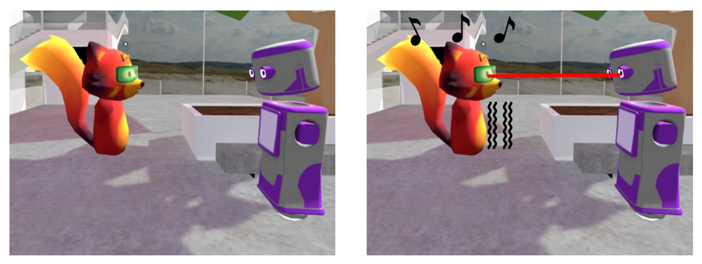

Towards Inclusive Conversations in Virtual Reality for People with Visual Impairments

Venue. MuC (2022) Workshop Paper
Authors. Markus Wieland, Tonja Machulla
Abstract. Current mainstream social Virtual Reality (VR) spaces pose barriers to the equal participation of people with visual impairments (PVI) in social interactions. At present, VR is first and primarily a visual medium with a strong emphasis on the visual design of the VR scene and the available avatars. If social communication cues, such as non-verbal communication, are available at all, they are often not provided in a form accessible to PVI. Such cues are essential in social interactions to successfully participate in social interactions and experience a conversation in VR as realistic. Here, we summarize previous research regarding specific requirements for social VR spaces to be accessible to PVIs. We describe how people with disabilities recognize and identify potential conversational partners and how non-verbal communication works between PVI and sighted people. Our goal was to provide an overview of valuable features that can be implemented for inclusive conversations in a social VR space.